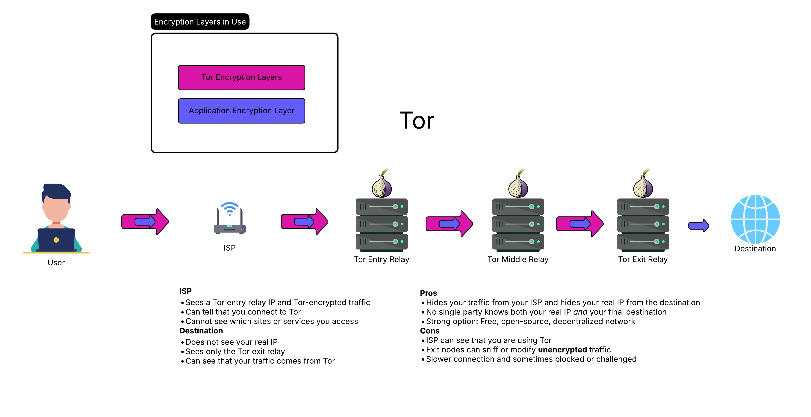

Tor vs VPN
Understanding the difference between Tor and VPNs, and when to use each.
VPN (Virtual Private Network)
A VPN encrypts your traffic and routes it through a single server operated by the VPN provider.

How it works:
- Your traffic is encrypted and sent to the VPN server
- The VPN server decrypts it and forwards it to the destination
- The destination sees the VPN server's IP, not yours
Pros:
- Fast speeds
- Easy to use
- Good for streaming and general browsing
Cons:
- You must trust the VPN provider
- Single point of failure
- VPN provider can see your traffic
Tor (The Onion Router)
Tor encrypts your traffic in multiple layers and routes it through 3 random nodes (guard, middle, exit).
How it works:
- Your traffic is encrypted in 3 layers
- Each node only knows the previous and next hop
- No single node knows both your IP and your destination
Pros:
- No single point of trust
- Strong anonymity
- Decentralized network
Cons:
- Slower speeds
- Some websites block Tor exit nodes
- Exit node can see unencrypted traffic (use HTTPS)
Tor over VPN
Connect to VPN first, then use Tor.

How it works:
- Your traffic goes: You → VPN → Tor → Destination
- Your ISP sees VPN traffic, not Tor
- The Tor guard node sees the VPN's IP, not yours
When to use:
- When you want to hide Tor usage from your ISP
- When Tor is blocked in your country
- Extra layer of protection for the guard node
VPN over Tor
Connect to Tor first, then use VPN.

How it works:
- Your traffic goes: You → Tor → VPN → Destination
- The VPN sees Tor exit node IP, not yours
- Destination sees VPN's IP
When to use:
- When you need a fixed IP that isn't a Tor exit
- When accessing services that block Tor
- When you trust the VPN more than random exit nodes